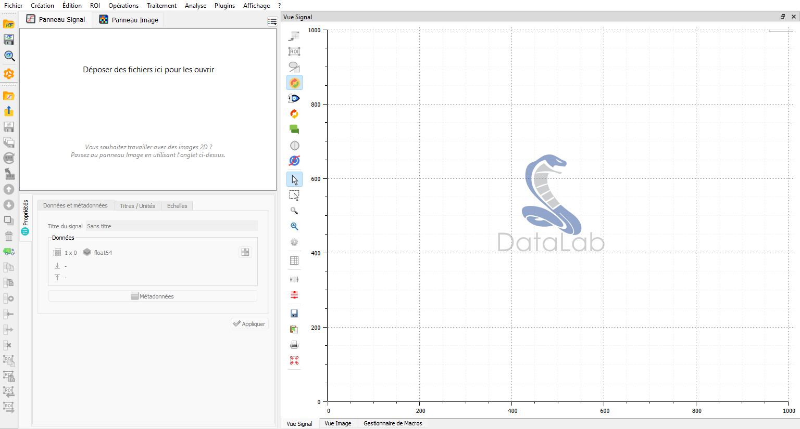

Vue d’ensemble#
Concepts de base#
Travailler avec DataLab est très simple. L’interface est intuitive et appréhendable facilement. La fenêtre principale est divisée en deux zones principales :
La zone de gauche affiche la liste des jeux de données actuellement chargés dans DataLab, répartis sur deux onglets : Signaux et Images. L’utilisateur peut basculer entre les deux onglets en cliquant sur l’onglet correspondant : cela bascule la fenêtre principale vers le panneau correspondant, ainsi que le contenu du menu et de la barre d’outils. Sous la liste des jeux de données, une vue Propriétés affiche des informations sur le jeu de données actuellement sélectionné.
La zone de droite affiche la visualisation du jeu de données actuellement sélectionné. La visualisation est mise à jour automatiquement lorsque l’utilisateur sélectionne un nouveau jeu de données dans la liste des jeux de données.

Fenêtre principale de DataLab, au démarrage.#
Modèle de données interne et espace de travail#
DataLab a son propre modèle de données interne, dans lequel les jeux de données sont organisés autour d’une structure arborescente. Chaque panneau de la fenêtre principale correspond à une branche de l’arbre. Chaque jeu de données affiché dans les panneaux correspond à une feuille de l’arbre. À l’intérieur du jeu de données, les données sont organisées de manière orientée objet, avec un ensemble d’attributs et de méthodes. Le modèle de données est décrit plus en détail dans la section API (voir sigima.objects).
Pour chaque jeu de données (signal 1D ou image 2D), non seulement les données elles-mêmes sont stockées, mais aussi un ensemble de métadonnées, qui décrit les données ou la façon dont elles doivent être affichées. Les métadonnées sont stockées dans un dictionnaire, qui est accessible via l’attribut metadata du jeu de données (et peuvent également être parcourues dans la vue Propriétés, avec le bouton Métadonnées).
L”Espace de travail de DataLab est défini comme l’ensemble de tous les jeux de données actuellement chargés dans DataLab, dans les panneaux Signaux et Images.
Chargement et enregistrement de l’espace de travail#
Les actions suivantes sont disponibles pour gérer l’espace de travail depuis le menu Fichier :
Ouvrir un fichier HDF5 : charger un espace de travail à partir d’un fichier HDF5.
Enregistrer dans un fichier HDF5 : enregistrer l’espace de travail actuel dans un fichier HDF5.
Parcourir un fichier HDF5 : ouvrir le Explorateur HDF5 pour explorer le contenu d’un fichier HDF5 et importer des jeux de données dans l’espace de travail.
Note
Les jeux de données peuvent également être enregistrés ou chargés individuellement, en utilisant des formats de données tels que .txt ou .npy pour les signaux 1D (voir Ouvrir un signal pour la liste des formats pris en charge), ou .tiff ou .dcm pour les images 2D (voir Ouvrir une image pour la liste des formats pris en charge).
Création et traitement interactifs d’objets#
DataLab fournit un flux de travail interactif pour créer des objets et ajuster les paramètres de traitement, vous permettant d’affiner les résultats sans créer plusieurs objets.
Création d’objets interactifs#
Lors de la création d’un nouveau signal ou d’une nouvelle image à l’aide des fonctions de création (par exemple, signal gaussien, image de pic 2D, etc.), DataLab stocke les paramètres de création dans les métadonnées de l’objet. Cela permet d’ajuster les paramètres de manière interactive après la création :
Créer un signal ou une image en utilisant le menu Opérations > Créer
Sélectionner l’objet créé dans la liste
Un onglet Création apparaît dans le panneau des propriétés (en bas à gauche)
Modifier n’importe quel paramètre de création (amplitude, fréquence, taille, etc.)
Cliquer sur Appliquer pour régénérer l’objet avec les nouveaux paramètres
L’objet est mis à jour sur place, préservant tous les résultats de traitement ou d’analyse ultérieurs. Cela est particulièrement utile pour :
Explorer différentes valeurs de paramètres sans encombrer l’espace de travail
Affiner les caractéristiques de l’objet tout en observant les résultats
Objectifs pédagogiques pour démontrer les effets des paramètres
Note
La création interactive n’est disponible que pour les objets créés avec des classes de paramètres (pas pour les données importées à partir de fichiers).
Traitement interactif 1-vers-1#
Lors de l’application d’une opération de traitement 1-vers-1 qui a des paramètres configurables (par exemple, filtre gaussien, seuil, opérations morphologiques), DataLab stocke les métadonnées de traitement, permettant l’ajustement des paramètres et le re-traitement :
Appliquer une opération de traitement avec des paramètres (par exemple, Traitement > Filtrage > Filtre gaussien)
L’objet résultant contient des métadonnées de traitement (paramètres, objet source, nom de la fonction)
Sélectionner l’objet traité dans la liste
Un onglet Traitement apparaît dans le panneau des propriétés
Modifier les paramètres de traitement (par exemple, valeur sigma du filtre)
Cliquer sur Appliquer pour re-traiter avec les paramètres mis à jour
L’objet traité est mis à jour sur place avec les nouveaux résultats. Ce flux de travail est idéal pour :
Ajustement itératif des paramètres du filtre tout en observant les résultats en temps réel
Ajustement des valeurs de seuil sans créer plusieurs objets intermédiaires
Expérimentation avec différentes tailles d’éléments de structure morphologique
Démonstrations éducatives des effets des paramètres sur les résultats du traitement
Note
Exigences en matière de métadonnées de traitement :
Ne fonctionne que pour les fonctions de traitement 1-vers-1 avec des classes de paramètres
Les fonctions de traitement sans paramètres (par exemple, valeur absolue, inverse) fonctionnent comme auparavant
L’objet source doit toujours exister pour le re-traitement (erreur affichée s’il est supprimé)
Non pris en charge pour :
Traitement 2-vers-1 (opérations combinant deux objets)
Traitement n-vers-1 (opérations agrégeant plusieurs objets)
Ces modèles ne bénéficient pas de manière significative de l’ajustement interactif des paramètres
Exemple de flux de travail#
Voici un flux de travail typique utilisant le traitement interactif :
Créer un signal de test : Opérations > Créer > Signal gaussien
Paramètres initiaux : amplitude=1.0, mu=50, sigma=10
Ajuster les paramètres de création : Dans l’onglet Création, changer sigma à 20, cliquer sur Appliquer
Le signal est régénéré avec une nouvelle largeur
Appliquer le filtre gaussien : Traitement > Filtrage > Filtre gaussien
Sigma initial=2.0
Ajuster le filtrage : Dans l’onglet Traitement, essayer sigma=1.0, puis sigma=5.0
Chaque application met à jour le résultat filtré
Comparer différents niveaux de lissage sans créer plusieurs objets
Cette approche interactive fournit un retour visuel immédiat et garde votre espace de travail organisé en évitant la prolifération d’objets de test avec des paramètres légèrement différents.